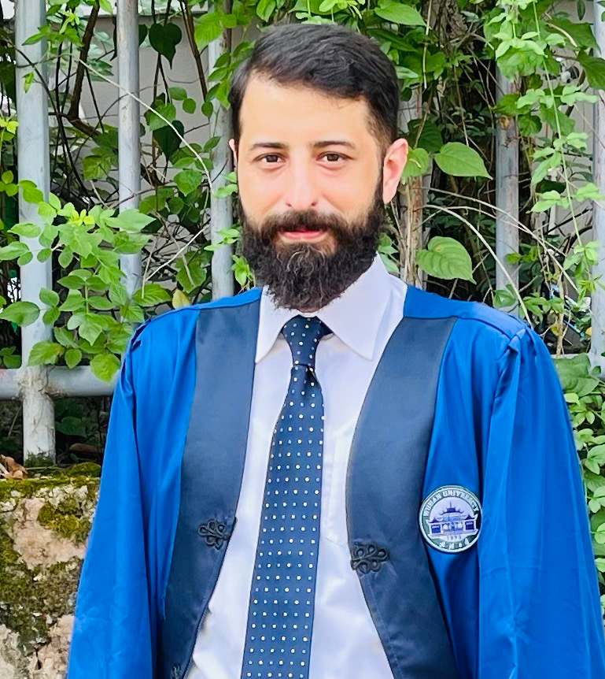
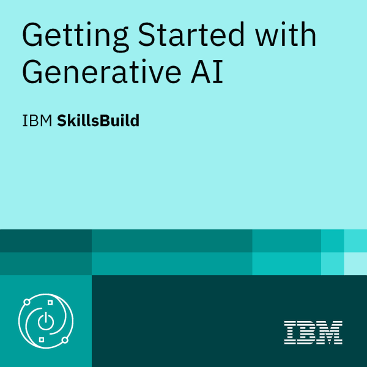

Multimodal Fusion
Early fusion of IRRG imagery with DSM/nDSM height information for binary building segmentation.

Computer Science · GeoAI · Remote Sensing
M.S. Graduate in Photogrammetry & Remote Sensing
LIESMARS, Wuhan University, China · Supervisor: Prof. Xianfeng Huang
I build reproducible geospatial AI workflows for aerial imagery and LiDAR-derived data, with a focus on multimodal semantic segmentation, building extraction, UAV sensing, point clouds, and intelligent geospatial systems.
Profile
Computer Scientist and M.S. graduate in Photogrammetry and Remote Sensing from Wuhan University, with interdisciplinary experience spanning geospatial AI, deep learning, remote sensing, scientific Python, UAV/LiDAR simulation, and software development.
My current research centers on reproducible machine-learning pipelines for very-high-resolution aerial imagery and LiDAR-derived DSM/nDSM data using Python, PyTorch, Rasterio, NumPy, Pandas, and scikit-learn. I also develop sensor-simulation systems using Unity, AirSim, C#, and Python.
Before and alongside graduate research, I worked in technical education, commercial/freelance software development, game development, and spatial-technology business support.
Research
Building extraction from aerial imagery and LiDAR-derived height data using controlled multimodal fusion experiments and full-tile evaluation.
Master's Thesis
The study compares imagery-only, height-only, classical Random Forest fusion, early-fusion U-Net, and a lightweight Squeeze-and-Excitation variant on ISPRS Potsdam, with cross-dataset transfer to ISPRS Vaihingen.
Early fusion of IRRG imagery with DSM/nDSM height information for binary building segmentation.
Full-tile sliding-window inference, controlled ablations, boundary analysis, and bootstrap confidence intervals.
Potsdam-to-Vaihingen transfer analysis focused on shadows, vegetation adjacency, small buildings, and urban domain shift.
Selected Work

Python · PyTorch · Rasterio · LiDAR · U-Net
Reproducible workflows for data preparation, patch training, checkpoint management, full-tile evaluation, statistical reporting, and qualitative visualization.

Unity3D · AirSim · C# · Python · LiDAR · IMU
Synthetic photogrammetry and UAV-sensing environment for urban, desert, and Mars-like terrains with synchronized sensor streams.

Unity3D · C# · Mobile · VR
Commercial and freelance software development spanning requirements, implementation, debugging, deployment, and client support.
Career
Multimodal building extraction using VHR aerial imagery and LiDAR-derived DSM/nDSM data.
Developed multi-sensor simulation workflows using Unity3D, AirSim, C#, and Python.
Supported technical communication, documentation, and international project coordination.
Delivered instruction in computer applications, programming fundamentals, digital skills, and freelancing.
Delivered software, simulation, interactive-application, and digital-product projects for clients.
Built Unity3D/C# games and interactive applications for mobile, VR, and other platforms.
Academic Background
M.S. Photogrammetry and Remote Sensing · LIESMARS · 2024–2026
CGPA: 3.47/4.00
Supervisor: Prof. Xianfeng Huang
B.S. Computer Science · 2010–2015
CGPA: 2.95/4.00
Technical Profile
Programming
Python, C#, C++, JavaScript, SQL
ML / CV / Geospatial
PyTorch, CNNs, U-Net, semantic segmentation, Random Forest, photogrammetry, GIS, aerial imagery, LiDAR, DSM/nDSM, Rasterio, multimodal fusion, point clouds
Tools / Simulation
NumPy, Pandas, scikit-learn, OpenCV, Matplotlib, Microsoft AirSim, Unity3D, Open3D, RViz, CloudCompare
Languages
English (advanced professional), Urdu (native), Chinese (HSK Level 3)
Professional Development
Issued by IBM
Issued: August 2026
Verify on Credly ↗
International Geoinformatics Summer School, Wuhan
July 2025
CBT&A — TEVTA, Government of Punjab
February 2024
University of the Punjab, Gujranwala Campus
Community
Contact
I am interested in opportunities related to GeoAI, remote sensing, multimodal learning, LiDAR, UAV sensing, and computer vision.